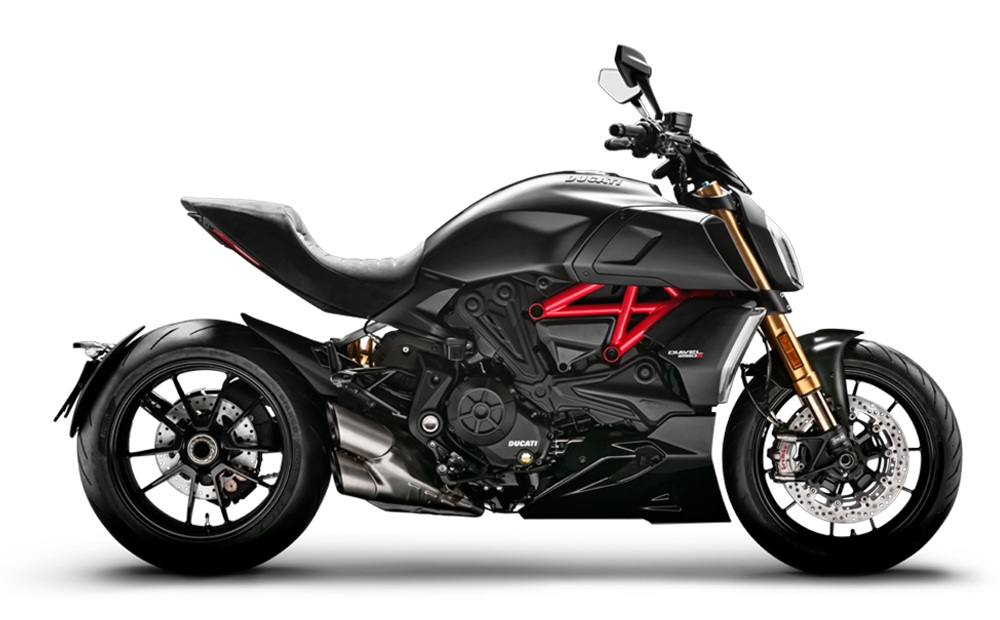
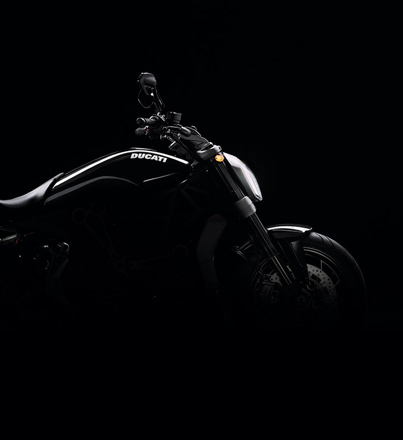
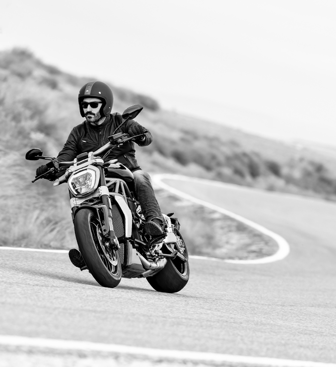
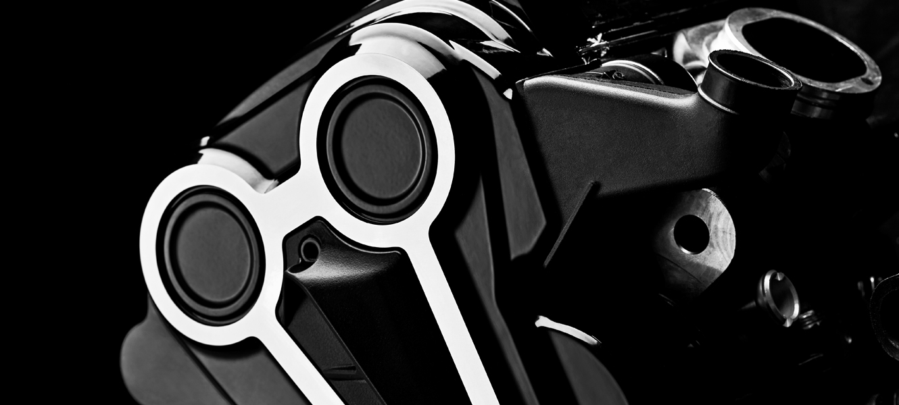

 XDIAVEL / XDIAVEL S Cruiser culture, Italian beauty Starting from: INR 17,50,000
BOOK A TEST RIDE The XDiavel is low speed excitement: relaxed low-speed riding, typical of the cruiser, combined with the excitement and the adrenaline of sports riding that charaterise every Ducati.Unmistakable style
 Long, low, muscular, with modern shapes and technologically cutting-edge components. But above all, sexy. This is how Ducati designers envisaged the XDiavel when they started work on the initial sketches. A bike that combines absolute style with cutting-edge technology. A bike that projects the concept of Cruiser into modern times, towards the future, a true "Technocruiser"Are you ready to change position?
 A wide handlebar and footpegs that are further forward. The road runs below the wheels, accompanied by a sense of control and comfort typical of a cruiser. But when it is time to face the corners, XDiavel will astound you. XDiavel is a cruiser, with a level of performance and technical content that allow for riding versatility and unique experiences.Engine is the king
 Beautiful, powerful, sophisticated. The Xdiavel has the latest evolutionary step of the testastretta engine: the Ducati Testastertta DVT 1262.The Ducati Testastretta DVT 1262. The increased displacement, combined with the use of the DVT (Desmodromic Variable Timing) system, allows for incredibly full, but also fluid, torque distribution even at low speeds, while ensuring sports performance at full throttle. In addition, the Ducati Testastretta DVT 1262 is extremely well designed.